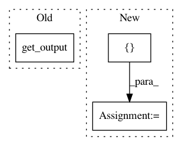

199e8bb5d7bb176a67074ffccab03e207d7cf0f4,tensorforce/examples/simple_q_agent.py,SimpleQModel,__init__,#SimpleQModel#Any#Any#,48
Before Change
// Create neural network
output_layer = [{"type": "linear", "num_outputs": self.action_count}]
self.network = NeuralNetwork(self.config.network_layers + output_layer, self.state, scope=self.scope + "network")
self.network_out = self.network.get_output()
// Create operations
self.create_ops()
self.init_op = tf.global_variables_initializer()
After Change
output_layer = [{"type": "linear", "num_outputs": self.action_count}]
define_network = NeuralNetwork.layered_network(self.config.network_layers + output_layer)
self.network = NeuralNetwork(define_network, [self.state], scope=self.scope + "network")
self.network_out = self.network.output
// Create operations
self.create_ops()
In pattern: SUPERPATTERN
Frequency: 3
Non-data size: 3
Instances
Project Name: reinforceio/tensorforce
Commit Name: 199e8bb5d7bb176a67074ffccab03e207d7cf0f4
Time: 2017-04-23
Author: k@ifricke.com
File Name: tensorforce/examples/simple_q_agent.py
Class Name: SimpleQModel
Method Name: __init__
Project Name: keras-team/keras
Commit Name: 10deb8f267e1d982415a23a8f5c8cc44da4f4671
Time: 2016-04-01
Author: francois.chollet@gmail.com
File Name: tests/keras/layers/test_normalization.py
Class Name:
Method Name: test_batchnorm_mode_0_convnet
Project Name: keras-team/keras
Commit Name: 10deb8f267e1d982415a23a8f5c8cc44da4f4671
Time: 2016-04-01
Author: francois.chollet@gmail.com
File Name: tests/keras/layers/test_normalization.py
Class Name:
Method Name: test_batchnorm_mode_0